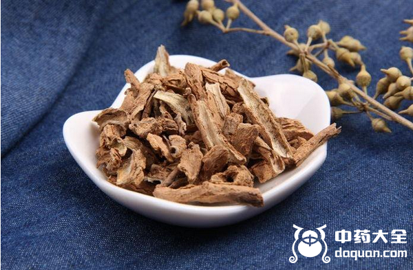
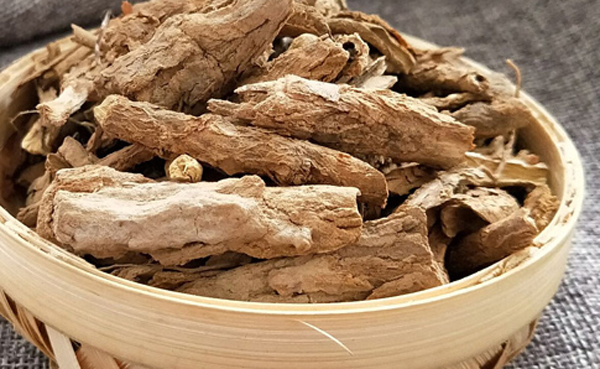
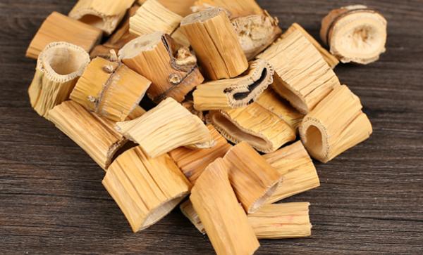

清热解毒的中药的主要以清热药为主，主要用于内热、湿热、火毒等多种里热症状，当人体内存内热、毒素就会出现上火，喉咙痛，长痘等症状，那么清热解毒的中药有哪些，中药大全给大家推荐8种常见清热解毒的中药。
1、板蓝根

板蓝根是我们常用的清热解毒的中药，一度被封为神药，在2013年非典那年，板蓝根可谓是大火一把，基本上家喻户晓。它有很好的抗病毒作用，对多种致病菌有抑制作用，清热解毒首选板蓝根，不过脾胃虚寒者不适合服用。
2、金银花
金银花是夏天基本的常用必备中药，许多工厂都会用金银花泡水供员工食用，不仅可以防止中暑，还可以清热解毒、抗炎，抗菌，同时对流感病毒、皮肤真菌也有抑制作用。
3、薄荷
薄荷草加柠檬泡水不仅清爽可口、解毒败火，还有促进食欲的作用，但是对于免疫力低下的人群以及脾胃虚、胃寒的人群不宜过量，腹泻的人不要服用薄荷水，会加重腹泻症状。
4、地骨皮

地骨皮有很好的解热作用，可以降低血糖、降低血清胆固醇，对于肺热、虚劳潮热、盗汗、肺热咳喘都有很好的功效。
5、马齿笕
马齿笕具有清热解毒、散淤消肿的功效，它被陈伟寒凉之品，既可以煎水喝，也可以当菜吃，由于它凉性太大，脾胃虚弱者、孕妇、腹泻的人群不要食用。
6、玄参
中医认为玄参其性寒、苦、味甘，有滋阴降火、凉血解毒的功效，对于热病烦渴的患者，可以使用玄参来清热降火。
7、芦根

芦根的性寒、味甘，具有清热生津的功效，适用于烦热口渴、微热呕吐，对肺热咳嗽也有很好的效果。
8、夏枯草
夏枯草其性寒，味苦，具有清肝火、降血压的功效，适用于肝火上炎导致的目赤肿痛，肝火旺的人可以用夏菇草泡水喝。
结语：清热解毒的中药有很多，以上为常用的8种清热解毒的中药，希望对您有所帮助。